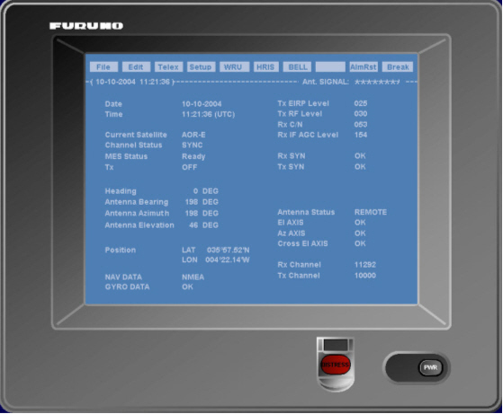

Telex Inmarsat

Encendido del Terminal
El terminal Inmarsat A o B se enciende pulsando el botón PWR del terminal télex. Tras el encendido se presentan las correspondientes Pantallas de Espera tanto en el microteléfono como en el terminal télex.
La Pantalla de Espera del terminal télex incluye la siguiente información:
- Nivel de señal: representado por un número de asteriscos entre cero (sin señal) y 8 (nivel máximo).
- Fecha y hora UTC actual.
- Satélite con el que se está conectado y estado de la comunicación. Cuando MES Status presenta Ready es posible la comunicación.
- Datos de orientación de la antena.
- Datos de navegación de la unidad.

La Pantalla de Espera también incluye el Menú Principal. Sus opciones pueden abrirse seleccionándolas mediante el ratón o pulsando las teclas de función F1 a F10. La tecla F8 no tiene asignada ninguna función.
Gestión de Archivos de Mensajes Télex
El menú File contiene las opciones necesarias para crear, nombrar, archivar e imprimir mensajes télex.

Desde este menú es posible realizar las siguientes opciones:
- Crear un nuevo mensaje. Al seleccionar la opción New Text se presenta la Pantalla de Edición donde se puede escribir el texto del mensaje.
- Archivar el mensaje creado / editado. Mediante las opciones Close Text o Save Text es posible archivar el mensaje creado o editado. Con Close Text el texto del mensaje es eliminado de la Pantalla de Edición mientras que con Save Text el texto permanece.
- Editar o consultar un mensaje archivado. Al seleccionar la opción Open Text se presenta la lista de mensajes archivados.
- Borrar un mensaje archivado. Al seleccionar la opción Delete File la aplicación solicita el nombre del mensaje a borrar.
- Renombrar un mensaje archivado. Al seleccionar la opción Rename File la aplicación solicita el nombre del mensaje a renombrar.
- Imprimir un mensaje. Al seleccionar la opción Print File la aplicación solicita el nombre del mensaje a imprimir.

Terminar el mensaje con NNNN (código de fin de mensaje). Si a continuación se añaden cinco puntos (.....) la comunicación se corta tras la transmisión del mensaje. Si en lugar de cinco puntos se añaden cinco comas (,,,,,) se corta la comunicación con el destinatario del mensaje pero se mantiene con la LES.
Al utilizar Close Text se presenta la siguiente ventana donde el operador puede seleccionar si desea salvar el mensaje o no.

Si se selecciona YES en la anterior ventana o se usa la opción Save Text, la aplicación solicita la introducción del nombre del fichero presentando la siguiente ventana:

Tras introducir el nombre del fichero pulsar la tecla Enter.

Si se desea presentar el mensaje en la Pantalla de Edición para su edición o consulta seleccionar la opción Load. Si se desea insertar el texto del mensaje en el texto presentado en la Pantalla de Edición seleccionar la opción Merge. El texto se insertará en la posición del cursor. Puede conmutarse entre ambas opciones pulsando la tecla Tabulación.
Con las teclas de flecha (abajo y arriba) seleccionar el mensaje y pulsar la tecla Enter. El texto del mensaje estará disponible en la Pantalla de Edición.

Con las teclas de flecha (abajo y arriba) se puede seleccionar el mensaje a borrar. Una vez seleccionado pulsar Enter y la aplicación pedirá confirmar el borrado.
Con las teclas de flecha (abajo y arriba) se puede seleccionar el mensaje. Una vez seleccionado escribir el nuevo nombre y pulsar Enter.

Con las teclas de flecha (abajo y arriba) se puede seleccionar el mensaje. Una vez seleccionado pulsar la tecla Enter. El mensaje se imprimirá en la impresora asociada al télex Inmarsat.
Edición de Texto de Mensajes
No se han implementado las opciones del menú Edit pero se puede cortar y pegar texto mediante las combinaciones de teclas Ctrl + X, Ctrl + C y Ctrl + V.
Configuración del Terminal
El menú Setup incluye opciones para registrar los datos de estaciones costeras y unidades participantes en el ejercicio. También permite orientar la antena y configurar la alerta de socorro.

Desde este menú es posible realizar las siguientes opciones:
- Registrar estaciones. Al seleccionar la opción Station List se presenta la lista de estaciones.
- Abonado terrestre: 00 PPP nnnnnnnnn
- MES: 00 RRR nnnnnnnnn
- Consultar la lista de estaciones costeras. Al seleccionar la opción LES List se presenta la lista de estaciones costeras con las que la unidad puede conectar.
- Orientar la antena. Al seleccionar la opción Comm Unit Setup se presenta el siguiente menú:
- Configurar el mensaje de socorro. El mensaje de socorro que se envía al pulsar la tecla Distress es posible configurarlo seleccionando la opción Comm Unit Setup – Distress LES. Al seleccionarla se presenta la siguiente ventana en la que se puede elegir la LES a la que enviar el mensaje y la naturaleza del peligro.

Con las teclas de flecha (abajo y arriba) se puede seleccionar la estación que se desea editar o consultar. Para introducir una nueva estación seleccionar una posición de la lista no ocupada. Al pulsar la tecla Enter se presenta la siguiente ventana donde se pueden introducir los datos de la estación: Nombre, Número de télex, Answerback y Comentario.
El número de télex tendrá el siguiente formato según el tipo de estación:
Donde:
00 Código de llamada automática.
PPP Código de País.
nnnnnnnnn Número de télex (7 dígitos para Inmarsat A y 9 para Inmarsat B).
RRR Código de región oceánica en la que se encuentra la MES llamada.
| Códigos de Región Oceánica | |||
| Atlántico-Este | Pacifico | Índico | Atlántico-Oeste |
| 581 | 582 | 583 | 584 |
Una vez introducidos o editados los datos de la estación pulsar Enter. Para eliminar una estación de la lista editarla y borrar su nombre.

A diferencia de los equipos reales, en el equipo simulado el sistema actualiza automáticamente esta lista mostrando todas las costeras con equipo Inmarsat compatible (A o B) que presten servicio en la región oceánica correspondiente.
Con las teclas de flecha (abajo y arriba) se puede seleccionar una estación costera. Al pulsar la tecla Enter se abre la ventana de edición de la costera seleccionada.

En el equipo real esta ventana se usa para actualizar manualmente la lista de LES, como en el equipo simulado esta lista se actualiza automáticamente, esta ventana no tiene ninguna utilidad y no se pueden introducir datos en ella.

Al seleccionar la opción Antena se abre una ventana que muestra los datos de orientación de la antena.

La antena se puede orientar de forma automática o manual según se seleccione Autotrack ON o Autotrack OFF, respectivamente, en el campo Autotrack. Para seleccionar el valor de este campo pulse la tecla Tabulación hasta situar el cursor en él y seleccione la opción ON/OFF pulsando las teclas de flecha (arriba y abajo).
Cuando está seleccionado Autotrack ON la antena se orienta automáticamente y los campos Azimuth, Elevation y Heading presentan el valor actual y no se pueden modificar.
Cuando está seleccionado Autotrack OFF la antena se puede orientar de forma manual con los valores introducidos en los campos Azimuth y Elevation. Para introducir estos valores pulse la tecla Tabulación y sitúe el cursor en el campo que quiera modificar y a continuación seleccione un valor pulsando las teclas de flecha (arriba y abajo). Si estos valores cambian muy deprisa, por ejemplo dejando pulsada la tecla de flecha, la antena se daña.
El campo Heading no se puede modificar ya que depende directamente de la orientación del buque.

La LES a la que enviar la alerta puede seleccionarse con las teclas de flechas (arriba y abajo) a partir de la lista de LES previamente registradas. La naturaleza del peligro puede seleccionarse también mediante las teclas de flecha.
Una vez seleccionados los datos pulsar la tecla Enter para aceptar los valores o Escape para descartarlos.
Se presentará un aviso de error si la LES seleccionada no está situada en el área de cobertura del satélite al que está conectado la unidad.

Transmisión de Mensajes Télex
El menú Telex incluye las opciones para realizar una comunicación télex y para presentar el registro de mensajes enviados o recibidos.
Antes de transmitir un mensaje télex es necesario registrar los códigos de estaciones costeras y los números de télex de las unidades participantes en el ejercicio. También es conveniente preparar y archivar el texto de los mensajes a transmitir.

Desde este menú es posible realizar las siguientes opciones:
- Conectar con una estación costera. Al seleccionar la opción Call LES se presenta la siguiente ventana donde se puede seleccionar la LES con la que se quiere comunicar, la prioridad de la comunicación y el código del servicio requerido.
- Conectar con una unidad participante en el ejercicio. Estando conectado con una LES al seleccionar la opción Call Station se presenta la lista de estaciones registradas. Mediante las teclas de flecha el operador debe seleccionar la unidad con la que se quiere comunicar y a continuación pulsar Enter.
- Transmitir un mensaje archivado. Estando conectado con una LES o con una unidad al seleccionar la opción Transmit File se presenta la lista de mensajes archivados. Mediante las teclas de flecha el operador debe seleccionar el mensaje que desea transmitir y a continuación pulsar Enter.
- Listar los mensajes recibidos o transmitidos. El sistema almacena los 25 últimos mensajes recibidos o transmitidos. Al seleccionar la opción Communication Log se presenta el registro con estos mensajes. Mediante las teclas de flecha es posible ver completo el registro.
- Conmutar la pantalla presentada. Al seleccionar la opción Change Window se cambia la pantalla presentada conmutando entre la Pantalla de Edición y la Pantalla de Télex Online o la Pantalla de Espera.

La LES a la que se quiere llamar se puede seleccionar de la lista de estaciones costeras registradas mediante las teclas de flecha (arriba y abajo). Igualmente se puede seleccionar la prioridad de la comunicación (Routine, Safety o Urgent).
Si se solicita un servicio a una costera que no está siendo controlada en ninguna consola, se presentará un aviso al instructor ofreciéndole la posibilidad de controlar dicha costera.
Si se requiere un servicio distinto de llamada automática, se introducirá su código de servicio. Los códigos de servicio posibles se presentan en la siguiente tabla. Se presentará un aviso de error si el código solicitado no es ofrecido por la LES seleccionada.
| Código | Servicio | Código | Servicio |
| 00 | Automatic Call | 12 | International Info |
| 14 | National Info Service | 21 | Store & Forward |
| 31 | Maritime Enquiries | 33 | Technical Assistance |
| 39 | Maritime Assistance | 42 | NAV Hazard Warning |
| 11 | International Operator | 13 | National Operator |
| 15 | Radio-telegram Service | 23 | Short Code Selection |
| 32 | Medical Advices | 38 | Medical Assistance |
| 41 | Meteorological Report | 43 | Ship Position Report |
| 91 | Automatic Telex Test |
Una vez introducidos los datos pulsar Enter. Si existe nivel de señal suficiente y el estado de la comunicación es Ready se iniciará la comunicación con la LES presentándose la Pantalla de Télex Online con los datos de la estación costera llamada y el estado de la conexión.

Cuando en la ventana se presente GA+ el operador puede iniciar la comunicación con la estación costera (si ha solicitado algún servicio distinto de llamada automática) o seleccionar la unidad con la que quiere comunicarse. En este último caso tiene 20 segundos para seleccionarla. Si tarda más tiempo se producirá una desconexión automática.
La unidad con la que se desea establecer comunicación puede seleccionarse introduciendo manualmente su número de télex (incluyendo código de llamada automática y código de región oceánica o de país y terminando con +) o utilizando la opción Call Station como se describe a continuación.
La comunicación con la LES se puede terminar seleccionando la opción Break del Menú Principal.
Si el número es correcto y la unidad está disponible (su terminal Inmarsat está operativo con nivel de señal suficiente) se presenta su answerback en la ventana. Tras presentar el answerback propio puede iniciarse la comunicación escribiendo directamente desde el teclado o transmitiendo un mensaje archivado como se describe en el siguiente punto. El texto introducido desde el teclado debe terminar con el signo + para que sea transmitido.
Es posible activar el timbre en la estación llamada seleccionando la opción BELL del Menú Principal. La comunicación se puede terminar seleccionando la opción Break del Menú Principal.
Se presentará un aviso de error si el número de télex introducido no es correcto.
La conexión se corta tras la transmisión del mensaje si este termina con cinco puntos (.....) o con cinco comas (,,,,,). En este último caso se corta la conexión con el destinatario del mensaje manteniéndose la conexión con la LES.

Recepción de Mensajes Télex
Cuando se recibe un mensaje suena una alarma. El mensaje es presentado en la Pantalla Télex Online y es impreso en la impresora correspondiente al terminal Inmarsat. La alarma puede silenciarse seleccionando la opción Alm Rst del menú principal.
El sistema almacena los 25 últimos mensajes recibidos o transmitidos por lo que el mensaje recibido puede consultarse posteriormente siguiendo el procedimiento descrito en el punto anterior.
Presentación de Answerback Durante la Comunicación
Al seleccionar la opción HRIS del Menú Principal se transmite el answerback propio. Al seleccionar la opción WRU del Menú Principal se solicita a la estación con la que se comunica la transmisión de su answerback.
Comunicaciones de Socorro
Para transmitir una alerta de socorro mantener pulsado durante al menos 6 segundos el botón Distress en el terminal télex. El mensaje de socorro será enviado automáticamente a la LES seleccionada en los datos de configuración del mensaje de socorro (ver el apartado Configurar el mensaje de socorro). Si se dispone de tiempo se puede seleccionar en dichos datos la naturaleza del peligro antes de enviar la alerta.
El mensaje de socorro se reenvía periódicamente hasta que sea reconocido por la estación costera.
Códigos de la Comunicación Télex
Después de una llamada pueden aparecer algunos de los siguientes códigos:
OCC+ cuando la estación llamada está ocupada.
ABS+ cuando no se encuentra la estación llamada (inmarsat apagado o fuera de la cobertura del satélite).
OOO+ cuando la estación llamada no responde en ninguna región oceánica.
INV+ cuando se introduce un número incorrecto.
EOS+ cuando el servicio pedido no está disponible en la LES.
OOS+ cuando el equipo no está operativo para llamar (desconectado, dañado).